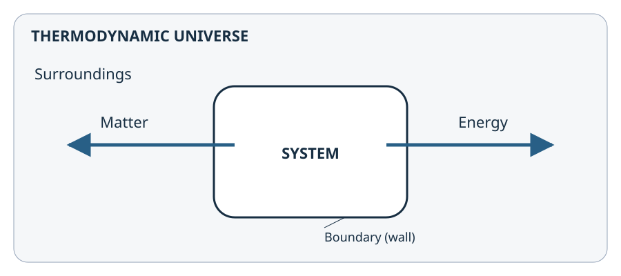
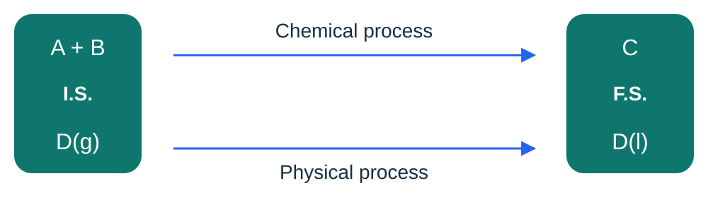

MODULE 1 / 6
Introduction to thermochemistry
Describe a system and its exchanges.
Why study thermodynamics?
How can we describe a system's evolution during a physical process, such as a phase transition, or a chemical process, in which reactants become products? What energy exchanges accompany these processes, and how can we quantify them?
Thermodynamics provides quantities and relationships for energy balances, determining possible directions of change and characterising equilibrium states. Reaction rates and their evolution over time are studied by chemical kinetics.
The thermodynamic potentials are tools for establishing energy balances and, depending on the imposed conditions, determining a system's direction of change and equilibrium state.
Defining the system studied
Thermodynamic system
The portion studied, delimited by a real or imaginary boundary called a wall, separating it from its surroundings.
Thermodynamic universe: surroundings + interacting system.

Physicochemical system
A set of physicochemical constituents that can evolve through physical processes (phase transitions) or chemical processes (chemical reactions).
A chemical constituent is a chemical species: atom, molecule or ion. A physicochemical constituent is a chemical species in a given state: liquid, solid, gas or dissolved.

Open, closed or isolated system
Open system
Possible exchange of matter and energy with the surroundings.
Closed system
No matter exchange, but energy transfer with the surroundings is possible.
Isolated system
Neither matter exchange nor energy transfer with the surroundings.
Identify exchanges on the diagram
Choose a system type to show the possible exchanges.
Open: possible exchanges of matter and energy.
The thermos represents an ideal isolated system. Arrows show possible exchanges in both directions.
System state and descriptive parameters
The system's state is its description at a given time: temperature, pressure, volume, composition and phases present, for example. These quantities are not all independent; their relationships depend on the system.
Extensive parameters
Proportional to the system's amount of substance. They are additive when two systems are combined: mass m, volume V, amount of substance n.
Intensive parameters
Independent of the system's amount of substance. They are not additive when two systems are combined: temperature T, pressure p, concentration C, mole fraction x.
| Quantity | Unit |
|---|---|
| Temperature T | K |
| Pressure p | Pa |
| Volume V | m³ ; 1 L = 10⁻³ m³ |
| Amount of substance n | mol |
| Mole fraction x | Dimensionless |
| Concentration C | mol·m⁻³ or mol·L⁻¹ |
| Mass m | kg |
Amounts of substance and units
Before writing the energy balance, determine amounts of substance and write the balanced equation.
| Quantity to determine | Relationship and units |
|---|---|
| Amount of substance | n = m/M; n in mol, with consistent mass units for m and M. For a solution: n = cV, with V in L if c is in mol·L⁻¹. |
| Mass of a liquid | m = ρV; use the volume units of the density ρ. |
| Ideal gas | pV = nRT; T in K, p in Pa and V in m³ with R = 8.314 J·mol⁻¹·K⁻¹. If molar volume is given: V = nVm. |
| Conversions | T/K = θ/°C + 273.15; 1 bar = 10⁵ Pa; 1 L = 10⁻³ m³; 1 bar·L = 100 J. |
| Ideal gas mixture | ntot = ∑ nᵢ ; xᵢ = nᵢ/ntot ; pᵢ = xᵢp. Partial pressures add to give p. |
State functions and thermodynamic potentials
State function
A state function depends only on the system's state: its change between an initial and a final state does not depend on the path.
A state function is not necessarily constant: its value may change when the system's state changes.
To describe a system's processes, thermodynamics uses energy quantities called thermodynamic potentials.
Thermodynamic potential
A thermodynamic potential is a state function with the dimensions of energy. Depending on the imposed constraints, it provides energy relationships and characterises equilibrium.
There are four classical thermodynamic potentials. We study two here. They will help us understand and calculate energy exchanges associated with chemical reactions and phase transitions.
Scientific reference
This definition is an educational paraphrase. The thermodynamic-potential framework is developed in the IUPAC technical report by R. A. Alberty (2001). This advanced text is not required reading for the pathway.
Thermochemistry · Lénaïc Lartigue · Introduction to thermochemistry · CC BY-NC-ND 4.0
6 concept questions
These questions cover definitions and relationships. You may try again.
Exercises
After the quiz, develop your reasoning on paper, then enter the requested results. The calculation steps are provided in the detailed solution, available after an attempt.
Your answers are stored in this browser. This record supports your practice; it is not a grade.
EXERCISE 1
Completing the definitions
Match each definition to its term.
Hint 1
Review the three system definitions, then those of extensive and intensive parameters.
Solution
1. Open. 2. Closed. 3. Isolated. 4. Extensive. 5. Intensive.
EXERCISE 2
Recognising parameters
For each quantity, state whether it is extensive or intensive.
Hint 1
Consider combining two identical portions.
Solution
V is extensive; T and p are intensive.
EXERCISE 3
Preparing units for a balance
There are 180 g of water, molar mass 18 g·mol⁻¹. Temperature is 25 °C and pressure is 1 bar.
Hint 1
Check the units before writing the balance.
Solution
n = 180/18 = 10 mol; T = 25 + 273.15 = 298.15 K; p = 100 000 Pa.
Discussion · Introduction to thermochemistry
Ask your question and describe the reasoning you find difficult. Discussions are public.
You may also ask questions by email or during an online class.